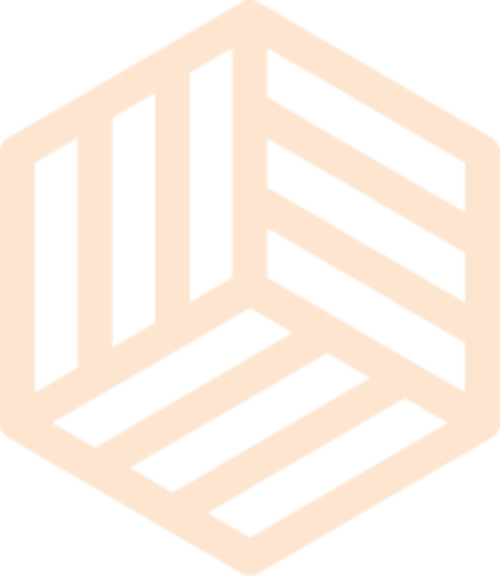
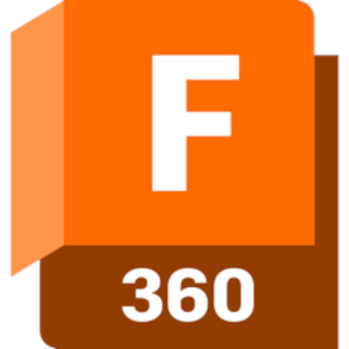
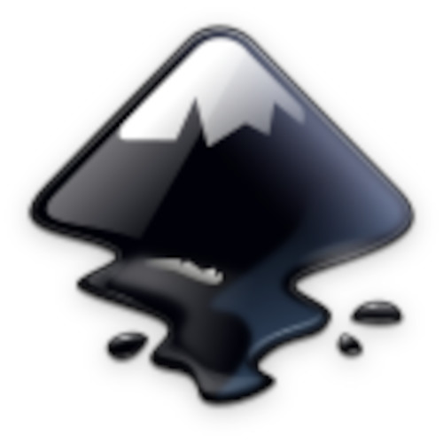
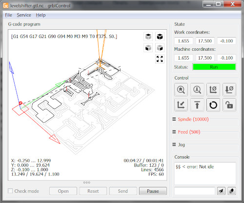
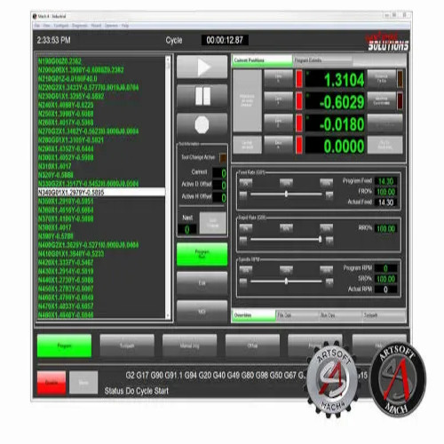

Perangkat Lunak CNC
Perangkat Lunak CAD & CAM apa itu?
Perangkat lunak desain CNC memungkinkan Anda membuat desain CAD 2D atau 3D, perangkat lunak CAM untuk CNC membuat jalur pahat dan mengekspor kode-g yang dapat ditafsirkan oleh router CNC Anda, dan perangkat lunak pengontrol CNC menjalankan mesin Anda untuk membuat ukiran dan potongan yang sempurna.
Pro-tip: G-code adalah format pemrograman CNC yang paling banyak digunakan

Perangkat lunak router CNC terbaik:
perangkat lunak CNC terbaik yang tersedia saat ini, termasuk perangkat lunak gratis dan berbayar.
Langkah pertama dalam proses ini adalah membuat desain menggunakan CAD (perangkat lunak desain berbantuan komputer), yang terpisah dari perangkat lunak pemrograman CNC. Anda dapat menganggap ini sebagai cetak biru untuk desain Anda.

Anda hanya perlu membuat tiga paket perangkat lunak – CAD, CAM, dan Feeds/Speeds Calculator. Bahkan ada penawaran yang tersedia yang menggabungkan beberapa di antaranya. Baca terus untuk memeriksanya. Mereka akan menghemat banyak waktu dan frustrasi Anda dengan imbalan beberapa dolar. Memulai dengan awal yang baik di CNC sangat berharga!
Pro Tip: Perangkat lunak CAD terkemuka untuk Pro adalah SolidWorks, dan perangkat lunak CAM terkemuka adalah Mastercam, meskipun Fusion 360 bergerak cepat.
Pro vs Pemula/Penghobi ( CNC Design Software — CAD Software for CNC)
Pro membutuhkan perangkat lunak yang berkinerja terbaik bagi seseorang yang ahli dalam menggunakan perangkat lunak. Mereka menginginkan CAD yang memungkinkan para ahli membuat gambar presisi lebih cepat. Mereka menginginkan perangkat lunak CAM yang menghasilkan G-kode yang dieksekusi secepat mungkin pada mesin CNC mereka, meskipun itu berarti hanya para ahli yang dapat membuat perangkat lunak tersebut melakukan apa saja. Itu karena mereka berpotensi membuat ribuan suku cadang dari satu program G-kode. Sementara menggambar lebih cepat dan lebih cepat g-code mungkin terdengar hebat, Pemula dan Hobi sering hanya ingin membuat bagian mereka sesegera mungkin. Siapa yang ingin menginvestasikan ratusan jam sebelum Anda dapat melakukan sesuatu yang sederhana?
| Software | Description |
|---|---|
|  | Easel Dibuat oleh Inventables, pembuat router X-Carve CNC yang populer, Easel dijual sebagai perangkat lunak CAD-CAM yang paling mudah dan lebih mudah diakses untuk CNC, sehingga pembuat yang paling tidak berpengalaman pun dapat memulai. Mengimpor G-kode dari alat seperti Fusion 360 ke Easel dengan mudah dan langsung melakukan pemesinan untuk alur kerja yang nyaman. |
|  | Fusion 360 Dengan pangsa pasar yang besar dan favorit banyak pembuat, Fusion 360 adalah perangkat lunak CAD/CAM all-in-one yang hebat untuk CNC. Mampu membuat desain CNC 2D dan 3D, Fusion 360 juga memiliki editor kode-g dan simulator CNC berdasarkan jalur alat pilihan Anda. |
|  | Inkscape Inkscape adalah perangkat lunak CNC sumber terbuka dan gratis yang biasa digunakan dalam pemotongan laser untuk alat desain 2D yang hebat. Dan untuk semua alasan yang sama, ini bagus untuk pemotongan CNC 2D karena vektor bekerja dengan sempurna untuk tanda pemotongan CNC dan proyek lain dengan desain teks dan gambar. |
| V-Carve Pro V-Carve memungkinkan Anda membuat jalur pahat CNC 2D, 2.5D, dan 3D yang kompleks dan menyertakan tekstur v-carving. Dengan V-Carve Anda mendapatkan akses ke perpustakaan file clipart 3D Vectric yang luas untuk membuat model dengan cepat, dan perangkat lunak mendukung modul lampiran sumbu 4/putar untuk pembuat CNC 4 sumbu mana pun. | |
| Carveco Maker Perangkat lunak ini berfokus pada penghobi dan pengguna bisnis kecil, mempercepat alur kerja Anda sehingga Anda dapat bekerja secara produktif dan membuat hal-hal seperti tanda khusus, papan, dan ukiran 3D — dan dapatkan lebih banyak juga :) | |
 | LinuxCNC LinuxCNC dapat mengontrol hingga 9 sumbu mesin CNC dan menjalankan pabrik , mesin bubut , lengan robot, pemotong laser, pemotong plasma, heksapoda, printer 3D , dan banyak lagi. Ini memiliki beberapa GUI berbeda yang cocok untuk jenis penggunaan tertentu, seperti pengembangan interaktif dan layar sentuh. Perangkat lunak ini juga sangat dapat disesuaikan dan mendukung banyak fitur kontrol tingkat lanjut, termasuk penyadapan kaku dan kompensasi pemotong. |
|  | GRBL Candle GRBL Candle adalah perangkat lunak kontrol CNC gratis yang digunakan dengan beberapa router CNC berbasis GRBL terbaik, seperti router Sainsmart Genmitsu 3018 Pro dan Vevor CNC. Meskipun ini adalah perangkat lunak yang cukup sederhana, namun tetap berkualitas tinggi dan sangat dapat diandalkan. |
| Software | Professional CNC Control Software |
|---|---|
|  | Mach4 Dikembangkan oleh Newfangled Solutions, seri Mach adalah pemimpin dalam perangkat lunak CNC. Penawaran terbarunya adalah Mach4 , reboot lengkap dari program perangkat lunak CNC Mach3 yang populer. Sementara Mach3 dirancang untuk mesin hobi sederhana, Mach4 juga cocok untuk pekerjaan CNC industri, dengan kecepatan dan kualitas yang jauh lebih baik. |
Dengan pasar yang besar dan favorit banyak pembuat, Fusion 360 adalah perangkat lunak CAD/CAM all-in-one yang hebat untuk CNC. Mampu membuat desain CNC 2D dan 3D, Fusion 360 juga memiliki editor G-code dan simulator CNC berdasarkan jalur alat pilihan Anda. #build Disini kita berbicara tentang Program mesin.